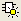

DRC Highlight Toolbar
Toggle toolbar display with: View > Toolbars > DRC Highlight
The highlight toolbar, , is described in the following table, along with keyboard shortcuts for the highlight actions.
Toolbar Icons |
Keyboard Shortcuts |
|---|---|
 Highlight in Context off |
Ctrl-T — Toggle Highlight in Context setting |
Move selection to previous result and highlight |
p keystroke left arrow key |
|
h keystroke double-click |
|
n keystroke right arrow key |
Ctrl- Move selection to previous leaf in the tree view and highlight the cluster |
Ctrl-up arrow to select the previous leaf, then h to highlight |
Ctrl- |
h keystroke |
Ctrl- |
Ctrl-down arrow to select the next leaf, then h to highlight |
See “Keyboard Shortcuts (Hotkeys) in Calibre RVE for DRC” for additional shortcuts.